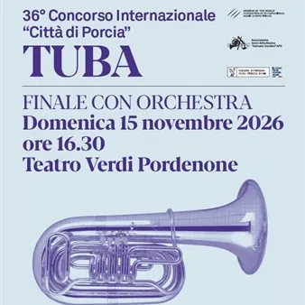

dom 15 nov · dalle 16:30
Concerto finale concorso "Città di Porcia" 2026 - Tuba
Domenica 15 novembre, alle 16.30, il palco della Sala Grande accoglie i finalisti del 36° Concorso Internazionale “Città di Porcia”, quest’anno dedicato alla tuba. L’appuntamento nasce dalla collaborazione con l’Associazione “Amici della Musica S. Gandino” di Porcia. Il Teatro…
 Indicazioni
Indicazioni
- Costi e prenotazioni
- Costo non indicato · Prenotazione non indicata
- Programma
- Programma da verificare. Apri la fonte ufficiale per orari e possibili aggiornamenti.
- In caso di maltempo
- Nessuna indicazione specifica pubblicata.
- Note
- Acquisito automaticamente dalla fonte.
L’EVENTO
Descrizione completa
Domenica 15 novembre, alle 16.30, il palco della Sala Grande accoglie i finalisti del 36° Concorso Internazionale “Città di Porcia”, quest’anno dedicato alla tuba. L’appuntamento nasce dalla collaborazione con l’Associazione “Amici della Musica S. Gandino” di Porcia. Il Teatro Verdi è partner progettuale del Concorso insieme al CIDIM di Roma, in linea con la sua vocazione a lavorare al fianco delle migliori realtà del territorio regionale con progetti di rilievo, capaci di coinvolgere anche il pubblico non specialistico. Sono 50 i concorrenti in gara, giunti da tutto il mondo: Cina, Francia, Germania, Giappone, Israele, Italia, Corea del Sud, Malesia, Messico, Portogallo, Spagna, Taiwan, Ucraina, Ungheria, Stati Uniti e Venezuela. Dopo le prove al Ridotto del Teatro (10-13 novembre), i finalisti si confronteranno con l’orchestra scegliendo tra il Landskap (Landscape) for tuba and orchestra di Torbjörn Iwan Lundquist e il Concerto per tuba e orchestra di John Williams. Mentre la Giuria si riunisce per assegnare i premi, la FVG Orchestra eseguirà Le tombeau de Couperin di Maurice Ravel, e la serata si concluderà con la proclamazione dei vincitori. Sostenere un concorso come questo significa investire nella crescita di una nuova generazione di artisti: offrire ai giovani musicisti un palcoscenico prestigioso, un confronto internazionale, l’occasione di far emergere il proprio talento e aprire le loro carriere a percorsi professionali. Sarà entusiasmante assistere a una serata in cui il talento di giovani musicisti arrivati da tutto il mondo si misura con un repertorio affascinante e il suono caldo e sorprendente della tuba, fino all’emozione della proclamazione dei vincitori. E con il Premio del Pubblico, sarà anche la platea a far sentire la propria voce.
Massimiliano Caldi, direttore
Programma
John Williams, Concerto per tuba e orchestra
Torbjörn Iwan Lundquist, Landskap (Landscape) for tuba and orchestra
Maurice Ravel, Le tombeau de Couperin, M.68 in collaborazione con Associazione “Amici della Musica S. Gandino” – Porcia Biglietteria Teatro Verdi:
Tel: 0434 247624
E-mail: biglietteria@teatroverdipordenone.it
Biglietti online
IL PROGRAMMA
Programma e orari
Appuntamenti raccolti dalle fonti elencate. Dove manca un orario, non è ancora disponibile in questa scheda.
Programma pubblicato
- Dal 2026-11-15 al 2026-11-15
INFORMAZIONI UTILI
Prima di partire
- Controllare la fonte prima di partire.
ORGANIZZAZIONE